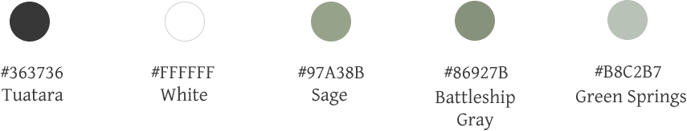

UI/UX PROJECT - CLOUD OFFICE
Cloud office is a web application that allows users to store information wherever they are, sharing and collaborating on the platform with other users.

The client has seen the possibilities in the cloud storage and organization market, and wants to find the right combination of features of popular brands to meet the needs of more audience.
In order to fulfill the requests from the client, I created the wireframes with adobe XD and prototype of the app with Figma. The prototype includes a landing page for encouraging users to begin a free trial and advertise features of the product, on-boarding screens to sign-up and login, as well as the dashboard for users to create new items, organize contents and accomplish other tasks. I launched a demo on inVision app for the client to use. In an already saturated market, the final product needs to combine a few compelling and unique features. Ultimately, as a designer, I need to help define its key differentiators, find the target audience, brand identity and make the important decisions.

DESIGN ROLES
- UX Design
- Branding
- Visual Design
DELIVERABLES
- User Surveys
- User Stories
- User Personas
- User Flows
- Competitive Analysis
- Site Map
- Style Guide
- Wireframes
- Prototypes (low-fidelity & high-fidelity)
TOOLS
- Figma
- InVision
- Adobe XD
PROBLEM
Currently, there’s not a cloud storage app that does it all. It can become frustrating for users, to switch between apps that do different things. In an already saturated market, the final product needs to combine a few compelling and unique features. Ultimately, as a designer, I need to help define its key differentiators, find the target audience, brand identity and make the important decisions.
SOLUTION
During the research process, my first attempt was to conduct a competitive analysis to learn a tremendous amount about the potential competitors. I created user flows for their products and analyzed them. I was able to identify the priorities and the weak points of the competitors. I also conducted a 20-question user survey to better understand users' preferences. After researching and analyzing, I evaluated the competitive landscape to capitalize on the missed opportunities of competitors and find the opportunities in this already saturated market.
The design
Process

COMPETITIVE ANALYSIS
I picked three popular platforms for cloud storage services to gain insights on the market and find the opportunities. Cloud Storage is only a small feature to Google, but it is almost 100% to Dropbox. Google can easily use other services to subsidize the loss in Google Drive. It is much harder for Dropbox to do the same. Comparing to Google drive, Dropbox specializes in cloud storage, featuring creative team collaboration. Evernote is quite different from the previous two services. Although it offers some space for file storage, its primary feature is capturing and organizing notes, files, photos, webpages and voice memos in one place. A new service can compete in this field by providing stable upload and download speed, secure data confidentiality, enough free storage space, fast and easy syncing and sharing, and excellent file version control.
[Click to view the complete SWOT analysis]USER SURVEY
I developed a Google form Survey to learn more about the potential users’ behaviors of collecting, saving, and sharing content.
-

Accessible with multiple platforms

Share files

Categorize files

Security

Real-time collaboration

Integrated document editing service

Web-clipping
USER PERSONA
After reviewing the detailed responses from 16 participants, I selected two respondents with different backgrounds, behaviors and motivations. I used the notes from the interviews to develop two user personas.
USER STORIES
I defined some of the basic tasks for new and returning users. I used the motivations, goals, frustrations represented in my user personas to create user stories. I divided the user types by new, returning, free, and paid users. The results of the survey and user stories help me prioritize product features. click to view the complete list of user stories.
As a user
I want to be able to share my content or folders with others with others via email invitation or link
As a user
I want to able to upload any file from my computer or mobile devices
As a new user
I want to create an account with email and password or Facebook, Twitter and etc.
As a returning user
I want to be able to log in and view my dashboard, update my account settings, and upgrade my plan
4 HIGHEST PRIORITY FLOWS
USER FLOWS
I created two user flow diagrams to link related user stories and visualize how users would interact with the platform to sign up, log in and fulfill their goals.


SITE MAP
After establishing an understanding of how users would interact with the website, I needed to define its actual structure. This will also benefit me later in the content strategy stage.
BRAND IDENTITY
The target market is users with high technology usage, and those professionals who want to work with their team through an online service. The service is preferably used in business contexts. After exploring some of the competitors’ brands, I found out that their brand designing is quite simple and direct. For example, Dropbox’s logo is an open box. They suggest that they have evolved from a literal box to “a collection of surfaces to show that Dropbox is an open platform, and a place for creation”. I want to name this service “cloud office”, since it is the service that connects users with any device on their hands and enables the users to work on the cloud. I come up with a few key words that I can cooperate into the branding: cloud, office, connection, computer.
As to the app logo design, users can find concepts of computer, sharing, and cloud. Since the app logo is relatively complicated, I decided to make another version of the actual logo type. The final logo is simple yet elegant. The pursuit of minimalism, gender-neutral design should be reflected in the design. The visual effect will be very calm, steady, harmonious and unified.

minimalism
-
calm
-
modern
-
steady
-
gender-neutral
-
harmony
The logo and brand style are modern, simple, and fun, which aim to simplify the form and highlight the inner brand image. The brand pursues an image of minimalism and gender neutralism.
The visual effect is very soft, calm, steady, and harmonious. Black and white will be the primary colors;
light sage, gray will be the secondary color choices.
The secondary colors with gray tone deliver the emotions of calm and gentle. The color saturation is reduced. The headings will be all capital letters with 5% letter spacing. Raleway is used for buttons and links.
STYLE GUIDE
COLOR PALETTE
LOGO
TYPEFACE
WIREFRAMES, LOW-FIDELITY MOCKUPS, HIGH-FIDELITY MOCKUPS

I used adobe XD and created 68 screens for detailed screens associated with key features of this application. [Click to view the all 68 screens]
HIGH-FIDELITY MOCKUPS


USABILITY TESTINGS
I conducted one remote and one in person user tests. A usability test script was then developed. Overall, the three users had a positive response to the site and were able to navigate the site smoothly. These two testers are both quite familiar with cloud-based services like this. Tests indicated that while the structure and purpose of the website was fairly clear, users were somewhat confused by the underdeveloped wireframes. Through the click tests, the two testers were asked to add content to their dashboard, sign up for an account and organize a piece of content.
The results of the user testing showed that the initial product was on-track with the basic features I had tried to work on. Testers tend to be confused about prototypes. They did not know how to move on to the next screen. I reminded them that it’s just a prototype and they are helping me to see if the buttons work and identify problem areas.I will use the test result to refine the design.
Adding a piece of content task: the “new “ button is bigger than other buttons
Organize the content task: Testers first think it’s the organize drop menu on the top to organize all the contents. I let them both know that it was to organize a file. They tried to open the notes file and clicked “menu”. They asked if there’s an easier way, so that they don’t have to open the file. I added “ move to” link on hover. I made some changes to the design according to the test results.
Project
Conclusion

I have learned a lot in this project, It has definitely taught me that my design should always be based on the preference of users. User testing is so important that it should come with every major step of my design.
This was my very first UX/UI design project. It was really enlightening to take the whole project from the very beginning with research all the way to the end with the whole finished design. It has taught so many things. First and foremost, I should always put my heart into it. I should continuously have a passion for art and design, which is to achieve a design with assiduous research and persistent effort. I need to be creative and have the blueprint I want in my head. After constructing the plan, I need to be flexible enough to use the most rational solution to achieve the most emotional and beautiful blueprint. Another important thing in UI design is the proficiency of using design applications. Throughout the whole project, I practiced using Figma, illustrator, adobe XD every day, and the progress has greatly improved my work efficiency. It has definitely taught me that my design should always be based on the preference of users. Users’ opinions are so valuable. User testing is so important that every major step of my design should come with a usability test. As a designer, I should always understand the needs and habits of the users from their own perspective.
If I had more time and resources, I would have fleshed out the designs more and spent more time developing that. I am proud of my design comparing to where it was in the beginning, however I still see elements that I want to change. Especially after the user tests and the finishing touches. I would also do a research with more potential users, test with more people and code the design into an actual demo site.